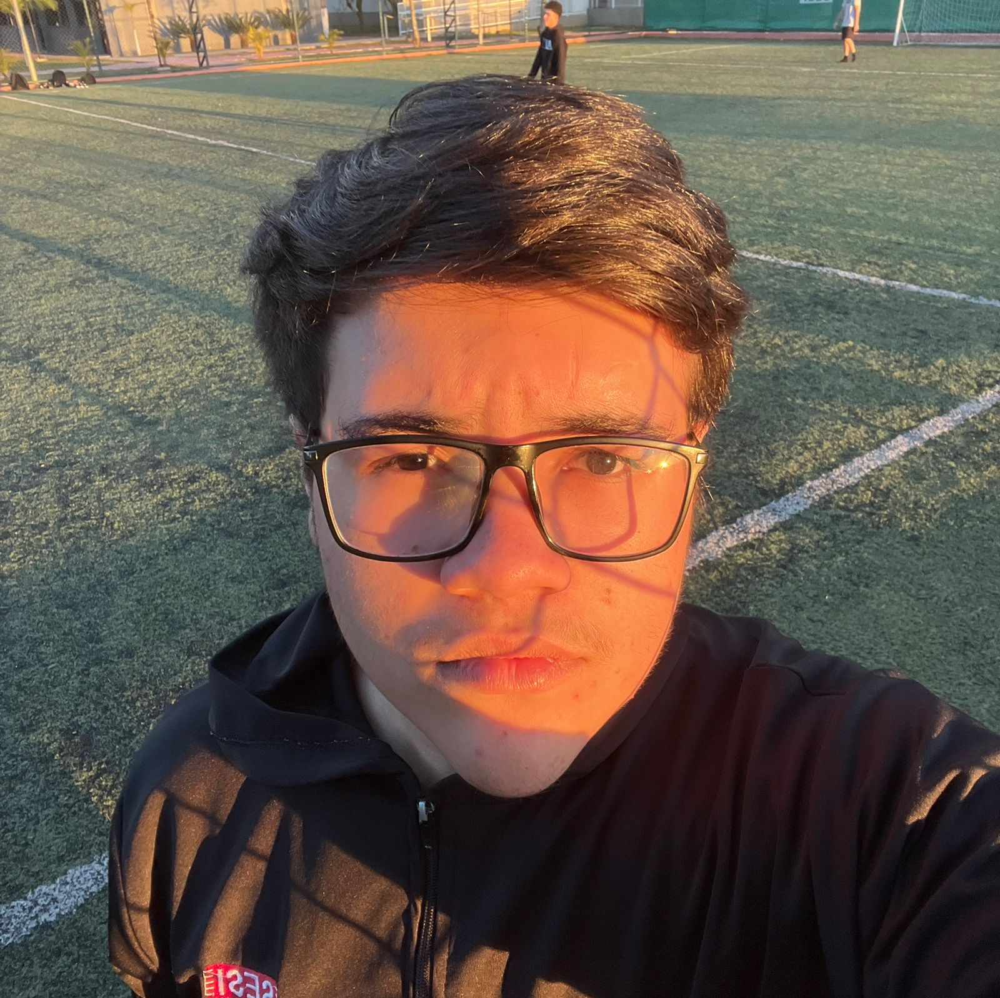

Meu nome é Marcelo, tenho 16 anos e estudo no SESI. Também curso Desenvolvimento de Sistemas no SENAI Suzano, onde estou descobrindo cada vez mais o poder da tecnologia. Acredito que cada aprendizado é um passo para construir meu futuro, e busco aproveitar todas as oportunidades para crescer, evoluir e me preparar para os desafios que virão. Meu objetivo é transformar conhecimento em realização e mostrar que dedicação e esforço podem abrir qualquer porta.
Projeto 1 - Site de tema livre
Tivemos o papel de desenvolver um site com tema livre, em que, após clicar em um link, iríamos para outra página com mais informações sobre o tema. Desenvolvi um sobre Bioluminescencia Marinha
Link Ondas BioluminescentesProjeto 1 - Site de ovo frito
Tivemos o papel de fazer uma página que continha as informações de como fazer um ovo frito utilizando Listas Ordenadas e Não Ordenadas.
Link Ovo Fritomarcelo.claudino@aluno.senai.br | instagram: @marcslrz | +55 11 96434-2197